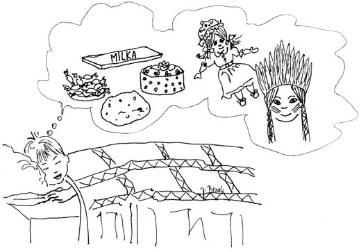

Dječji snovi
Children's Dreams

Sanjao je mali Davorpalačinku kao lavor,tortu filom napunjenu,čokoladom prelivenu.
Little Davor had a dream:pancake like a washtub, wide,layered cake packed full of cream,chocolate poured on every side.
Sanelica, mala maza,dobila od Djeda Mrazaposlastica razne vrste,sada mljacka, liže prste.
Sanelica, little pet,from Grandfather Frost has gottreats of every kind to try;now she smacks, licks fingers dry.
Čujte samo malog Vladu!Dobio od svoga bratas lješnjacima čokoladuveliku k´o sobna vrata.
Listen, now, to little Vlado!From his brother he got, what's more,chocolate bar with hazelnutsbig as a bedroom door!
Jedna Jela iz mog selau snu uvijek nosi sliku:ona želi za rođendančokoladu i barbiku.
In my village, Jela dreamsalways of the self-same thing:chocolate and a Barbie dollshe hopes her birthday will bring.
Željka opet od Damirau snovima nema mira,prkosi joj, viče, svirai lutkice njene dira.
Željka, too, because of Damir,gets no peace in dreams at all:he defies her, shouts and toots,and he fiddles with each doll.
Jutros Pero trlja oči,imao je sanak buran:sanjao je prošle noćida ga juri strašni puran.
Pero rubs his eyes this morning:what a stormy dream he had!Dreamed last night a fearsome turkeyhad been chasing him like mad.
A Ivica od mog stricanoću glasno viče: Howgh!Sanja da je poglavica,baca koplje, tomahawk.
And my uncle's boy, Ivica,shouts out loud at night-time: "Howgh!"Dreams that he's a chief who throwsboth his spear and tomahawk.
Stevica je čudnog soja,pravi nered, zbrku živu.Često sanja kauboja,poglavicu juri Ivu.
Stevica's a funny sort,makes a mess and hullabaloo;often dreams he is a cowboy,and he chases Chief Ivo too.
Znate onog Miru, zloću,što po kući sve prevrće?Ružne snove sanja noćuda ga tata šibom tuče.
Do you know that rascal Miro,turning all the house around?Nasty dreams he dreams at night,that Dad's switch comes whipping down.
Zapamtite, tko je miotaj po noći divno sanja,ali tko je zločest bio,toga ljuta šiba ganja.
So remember: those who're goodhave sweet dreams the whole night through;but the naughty ones will findthat the stinging switch pursues.